Painel B2B de rastreabilidade de cadeia fria: conecta fornecedor, transportadora e destinatário numa mesma viagem, com monitoramento de temperatura em tempo real via sensores IoT e emissão de certificados de conformidade sanitária. Construído sobre a mesma API documentada em api-test-reports/ — todas as telas abaixo usam dados reais, nenhuma é mockada.
Sem NgModule, sem gerenciador de estado à parte — o volume de estado do app não justifica NgRx; HttpClient + signals resolve tudo. Cada componente mora na própria pasta com seu .html/.scss/.spec.ts próprios.
signal/computed/effect)Sem state manager externo — o app não tem estado compartilhado complexo o bastante pra justificarng-openapi-gen a partir de /v3/api-docs ao vivoTipos e services nunca são escritos à mão — o DTO gerado é a fonte da verdadeloadComponent por feature + guards funcionaisCada tela carrega só quando acessada; guards como CanActivateFn, não classesFormsModule + ngModel ligado a signals via model()Poucos formulários no app (login/registro/busca) — não precisou de Reactive FormsA API ainda não tem login/JWT — todo request carrega um header X-User-Id que identifica o usuário atual (ver parte1, passo 5). O frontend decidiu simular a experiência de login sem inventar autenticação que a API não tem:
CurrentUserService.loginByEmail() busca o usuário por e-mail em GET /api/users e usa o id encontrado como X-User-Id daí em diante. O campo de senha existe na tela (fiel ao mockup) mas nunca é validado — não há endpoint pra isso ainda.
POST /api/users exige um X-User-Id de alguém já autenticado — mas a tela de Registro precisa funcionar para quem ainda não tem conta. A tela usa o admin global do sistema como "ator oculto" só pra essa chamada específica, depois já loga o usuário recém-criado normalmente.
Todo request HTTP passa por um HttpInterceptorFn que lê o userId() atual do CurrentUserService (ou o admin global, antes do login) e injeta X-User-Id automaticamente — nenhuma tela precisa se preocupar com isso.
authGuard protege tudo dentro do Shell (redireciona pra /login sem sessão). adminRoleGuard protege /admin/* exigindo ROLE_ADMIN ou ROLE_COMPANY_ADMIN — testado de verdade via Playwright: um usuário ROLE_OPERATOR tentando acessar é redirecionado pro dashboard.
Paleta extraída dos mockups aprovados (design-references/*.html) e transformada em CSS custom properties globais — nenhum hex solto no meio dos componentes.
Componentes reutilizados entre as 7 features, em vez de duplicar markup:
Cada screenshot abaixo foi capturado agora, logado como admin, navegando pelo app real (localhost:4200) contra a API real (localhost:8080) — sem mock de rede em nenhuma tela.
Login por e-mail (senha decorativa) e cadastro público via admin oculto — ver seção Autenticação acima.
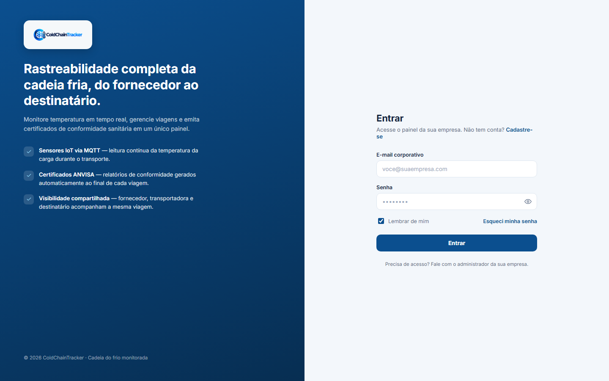
KPIs de viagens ativas, alertas do dia e conformidade do período (donut calculado a partir dos relatórios reais), tabela de viagens em andamento e lista de alertas recentes.
GET /api/trips · GET /api/alerts · GET /api/reports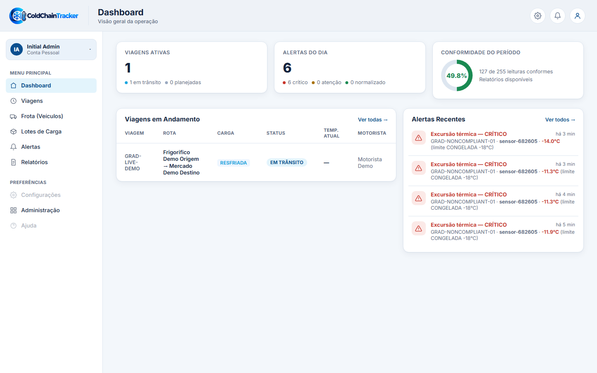
Busca, abas por status, temperatura atual derivada do alerta mais recente da viagem (ou da última leitura de telemetria, se não houver alerta ativo).
GET /api/trips · GET /api/alerts · GET /api/trips/{id}/telemetry/history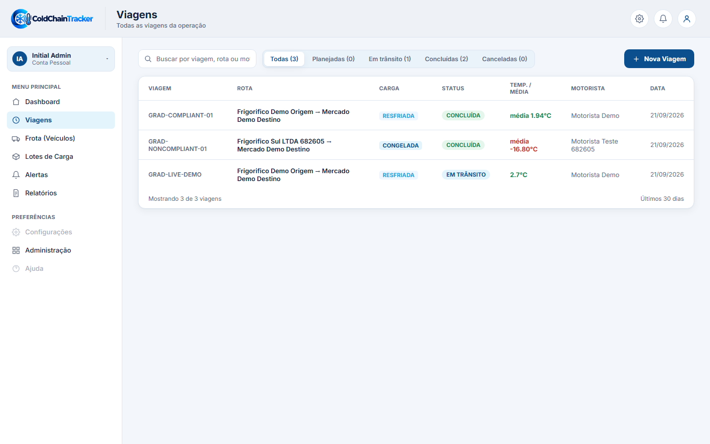
Gráfico de temperatura ao vivo via SSE (implementado com fetch + ReadableStream, já que o endpoint exige o header X-User-Id que o EventSource nativo não suporta), lote anexado e linha do tempo da viagem.
GET /api/trips/{id} · GET /api/trips/{id}/telemetry/history · GET /api/trips/{id}/telemetry/stream (SSE) · GET /api/alerts?tripId=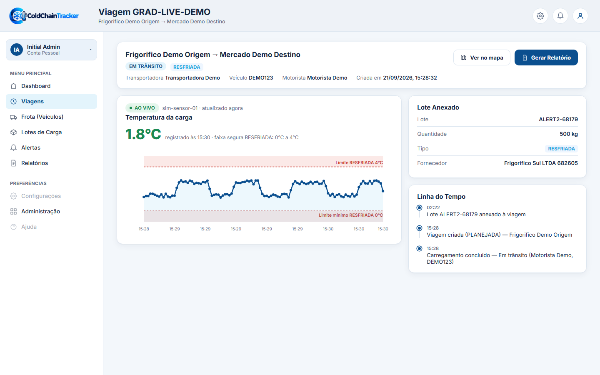
Uma única tela com abas Veículos/Motoristas. Status ("EM VIAGEM"/"DISPONÍVEL"/"EM MANUTENÇÃO") é derivado de viagens em andamento reais, não um campo fixo.
GET /api/vehicles · GET /api/drivers · GET /api/trips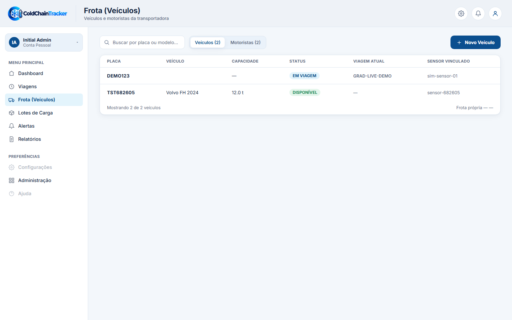
Histórico de viagens do veículo e dados reais (placa, modelo, capacidade). O mockup original tinha campos fictícios ("Ano", "Motorista habitual", painel de "Manutenção" com datas inventadas) que não existem no backend — removidos em vez de fabricados.
GET /api/vehicles/{id} · GET /api/trips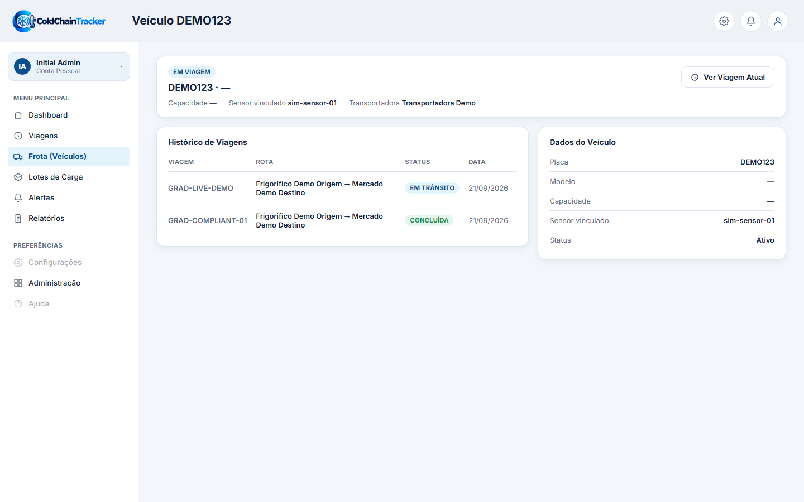
Histórico de viagens e um painel de "Desempenho" (viagens concluídas + conformidade média) calculado de verdade a partir dos relatórios do motorista — não um número decorativo do mockup.
GET /api/drivers/{id} · GET /api/trips · GET /api/reports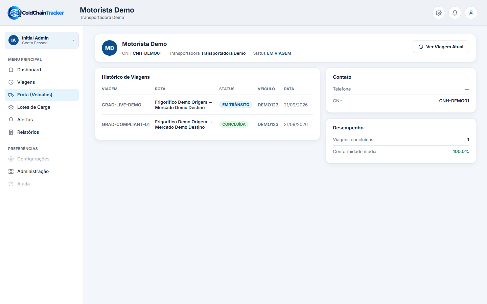
Status ("Aguardando embarque"/"Em trânsito"/"Entregue") derivado da viagem à qual o lote está vinculado. A coluna "Produto" do mockup (nomes fictícios como "Peito de frango congelado") foi trocada por "Fornecedor", campo real. Detalhe do lote (/lotes/:id) ainda não tem mockup aprovado — pendência conhecida, ver abaixo.
GET /api/meat-batches · GET /api/trips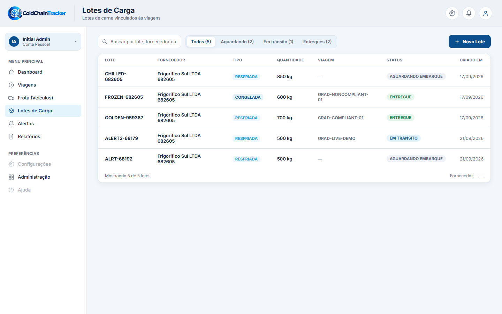
Abas por severidade, busca por viagem/sensor. Lista limitada aos 50 mais recentes (ver bug corrigido na seção de notas técnicas).
GET /api/alerts · GET /api/trips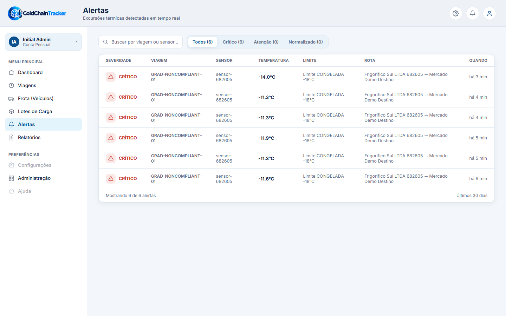
Gráfico snapshot (não ao vivo — é um evento passado) da janela de telemetria em torno do momento da excursão térmica, com bandas de limite dinâmicas conforme o tipo de carga. Sem GET /api/alerts/{id} no backend — busca a lista completa e filtra pelo id no cliente.
GET /api/alerts · GET /api/trips/{id} · GET /api/trips/{id}/telemetry/history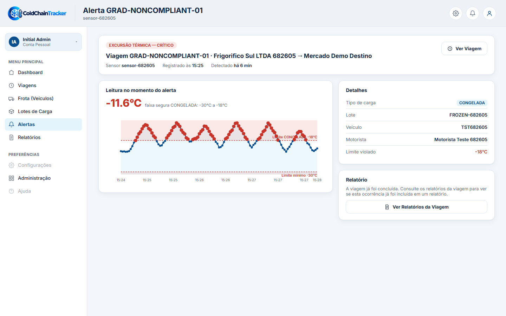
Abas Conformes/Não conformes, e um botão de download que baixa um PDF real gerado pela API (GET /api/reports/{id}/pdf) — testado ponta a ponta via Playwright, arquivo %PDF válido de verdade.
GET /api/reports · GET /api/reports/{id}/pdf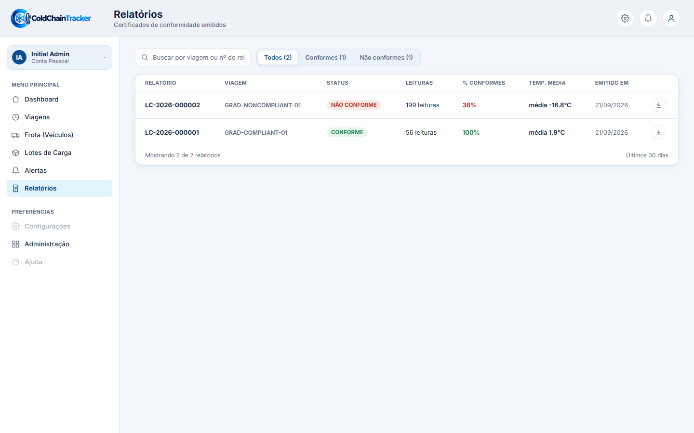
Renderiza o certificado como um "documento" visual (identificação, resumo estatístico, conclusão) a partir dos mesmos dados estruturados que a API retorna — sem expor o template interno que o backend usa pra gerar o PDF, que são coisas diferentes.
GET /api/reports/{id} · GET /api/trips/{id} · GET /api/drivers/{id}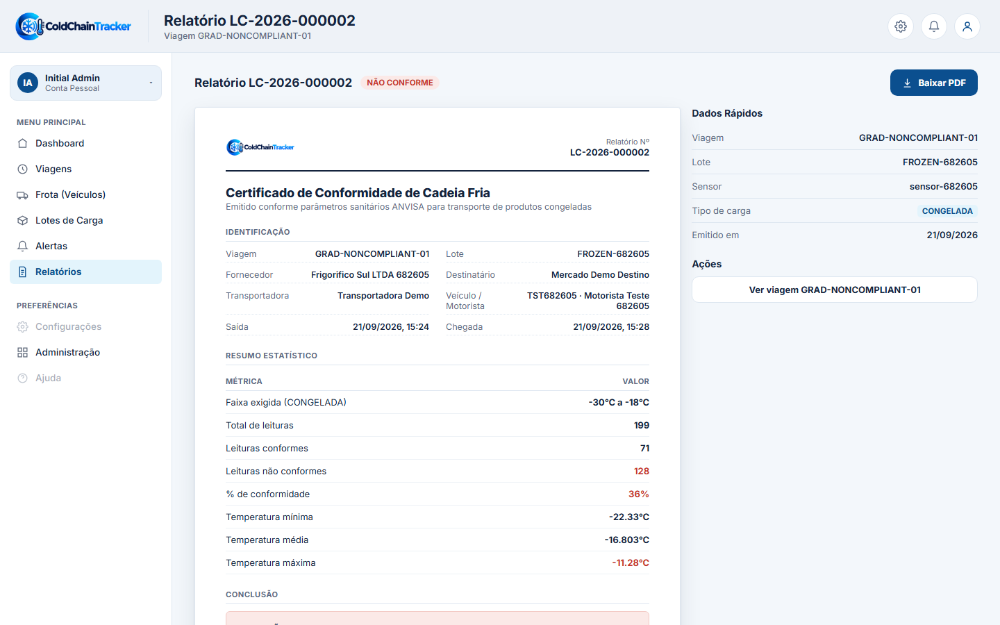
Somente leitura. Contagem de usuários por empresa calculada de verdade (cruzando com /api/users) — o mockup tinha uma coluna "Status: Ativa" fixa sem campo real por trás, removida.
GET /api/companies · GET /api/users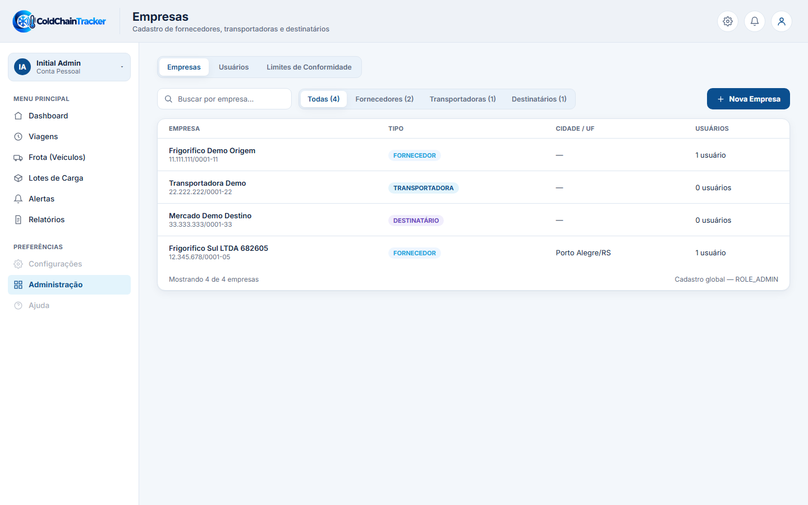
Status Ativo/Inativo usa o campo real active do usuário. A coluna "Último acesso" do mockup foi removida — não existe rastreamento de sessão no backend ainda, e inventar essa data seria mentir com dado falso.
GET /api/users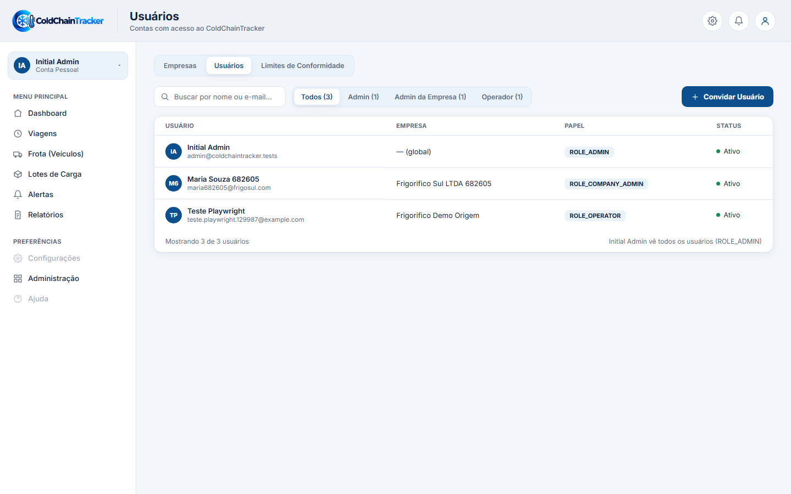
Referência somente-leitura das faixas ANVISA, direto do endpoint público de thresholds — os mesmos valores usados pelo backend pra calcular todo o resto do app.
GET /api/compliance-thresholds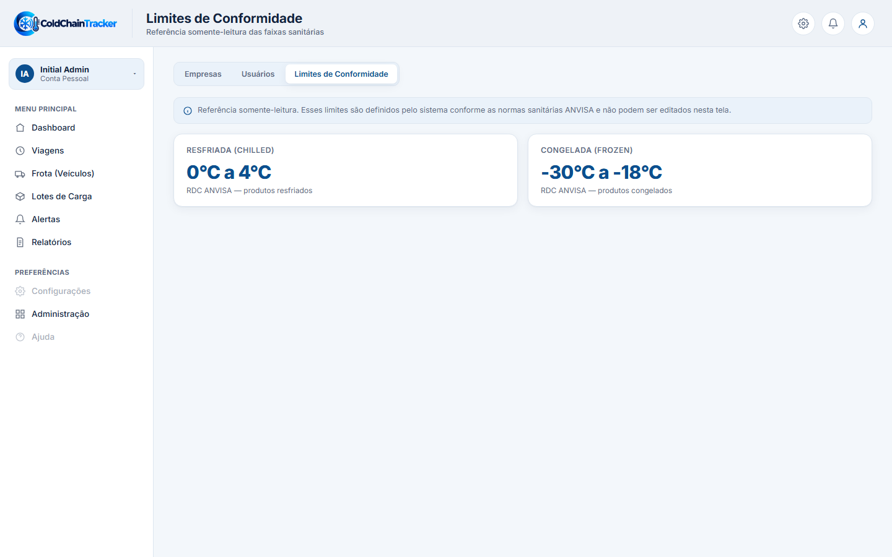
Testar só com listas vazias ou 2-3 registros de exemplo não prova que o frontend aguenta dado real — os problemas abaixo só apareceram ao navegar o app de verdade contra a API com centenas de registros (simulações de estresse rodadas em branches anteriores).
Todo endpoint gerado pelo ng-openapi-gen pede responseType: 'blob' por padrão — um interceptor próprio (jsonBlobInterceptor) converte de volta pra JSON com base no Content-Type real da resposta. Nos specs, o mock de resposta não incluía o header Content-Type, então o interceptor nunca reconhecia o corpo como JSON — os componentes recebiam um Blob cru e travavam ao chamar .filter() nele. Corrigido definindo o header explicitamente em todo mock de teste HTTP do projeto.
null vs undefined quebrando .toFixed()Vários campos numéricos opcionais (temperatura de pico, médias) vêm como JSON null explícito quando não há leituras ainda — não undefined. Checagens como if (valor !== undefined) deixavam passar o null e o .toFixed() seguinte quebrava a tela inteira. Corrigido trocando por != null (que cobre os dois) em todo o app.
Uma viagem de teste de estresse tinha 272 alertas reais. Tanto a lista de Alertas quanto a linha do tempo do detalhe de viagem renderizavam todas as linhas sem limite — a página ficava absurdamente comprida e ilegível. Corrigido limitando a exibição (50 na lista de alertas, 10 na linha do tempo), com nota explícita de quantos itens estão sendo omitidos.
O mesmo caso de estresse (milhares de leituras numa janela de tempo curta) deixava os gráficos SVG de temperatura virando uma parede de pontos sobrepostos. Corrigido com downsampling (amostragem uniforme até 120 pontos) nos gráficos de Viagem e de Alerta.
NG0950 — input obrigatório lido cedo demaisAs telas de detalhe de Veículo e Motorista liam o input id() (obrigatório, vindo do parâmetro de rota) direto no construtor — antes do Angular terminar de vincular o valor, o que derrubava o componente com NG0950 nos testes. Corrigido envolvendo o carregamento de dados num effect(), que só roda depois da primeira vinculação — mesmo padrão que o detalhe de Viagem já usava.
O host do componente Sidebar tinha height:100% explícito, o que quebra o align-items:stretch implícito do flexbox (só funciona quando a altura é auto). Corrigido mantendo height:100% só no elemento interno, e display:block (sem altura fixa) no host.
Cada item abaixo foi uma escolha deliberada — nunca inventar uma tela ou campo que não tem mockup aprovado ou dado real por trás, mesmo quando o mockup original sugeria algo mais.
Detalhe de Lote (/lotes/:id) não foi implementado — existe mockup aprovado da lista, mas não do drill-down. A rota permanece como "em desenvolvimento" até esse mockup existir.
Botões de criação ("Nova Viagem", "Novo Veículo", "Novo Motorista", "Nova Empresa", "Convidar Usuário", "Novo Lote") aparecem fiéis ao mockup mas não abrem nenhum formulário — nenhuma dessas telas de criação foi desenhada ainda.
"Ver no mapa" (detalhe de viagem) e "Reenviar por e-mail" (detalhe de relatório) não têm endpoint ou mockup de destino — mantidos visualmente fiéis ao mockup, sem ação real.
Campo de senha no Login/Registro nunca é validado — ver seção Autenticação acima.
Só o tema claro está implementado. Os tokens de design já têm um bloco dark.* reservado nos mockups pra um tema escuro futuro.